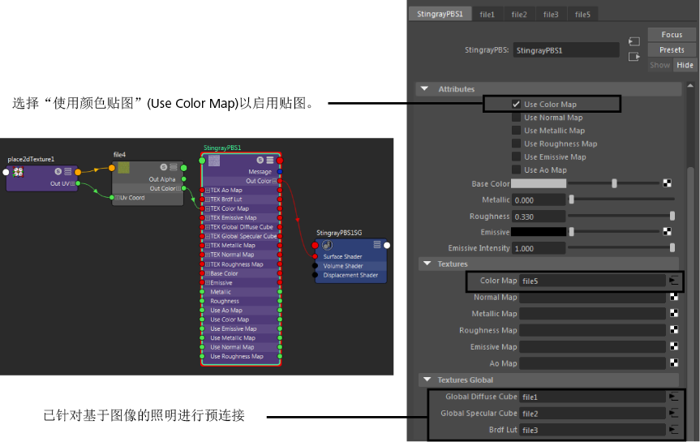

默认情况下，Stingray PBS 节点接受六种不同类型的贴图的输入：
- Ao 贴图（环境光遮挡）
- 颜色贴图（漫反射系数或漫反射）
- 放射性贴图（辉光）
- 金属贴图（金属）
金属贴图是确定金属性对象区域以及非金属性区域的遮罩。此值应为 0 或 1，其中非金属为 0，而金属为 1。贴图值应该表示材质的顶层；因此，已上漆的金属不应设置为 1，因为油漆属于非金属。
- 法线贴图
- 粗糙度贴图
此贴图确定曲面的粗糙程度，并进而确定其反射率。粗糙度为 0 表示平滑的曲面，因此是全反射。增大粗糙度值时，反射变得更分散且更模糊。
此外，为基于图像的照明预连接了三个文件，且在场景中的所有 Stingray PBS 节点之间共享其连接的文件节点。在属性编辑器的“纹理全局”(Textures Global)部分中可以找到这些连接。
除了上述“标准”预设外，还有两个预设允许您执行以下操作：使用“属性编辑器”(Attribute Editor)中的“预设材质”(Preset Material)下拉列表切换到这些预设。
- Standard_Transparent 预设：提供“不透明度”(Opacity)控件，允许设置不透明度/透明度的级别
- Standard_Masked 预设：允许您通过提供不透明遮罩贴图以确定是否渲染像素（而不是执行 Alpha 融合），进一步控制透明度
采用下述两种方式之一连接这些贴图：
使用属性编辑器
-
选择 Stingray PBS 节点。
- 在属性编辑器中的“纹理”(Textures)标题下，在要连接贴图的位置单击
 图标（例如，“颜色贴图”(Color Map)）。
图标（例如，“颜色贴图”(Color Map)）。
这将创建文件节点，并在属性编辑器中显示其属性。
- 在“文件”(File)节点属性中，单击“图像名称”(Image name)旁边的文件夹图标，然后导航以选择纹理贴图。
- 再次选择 Stingray PBS 节点，然后在属性编辑器中启用对应的“使用 * 贴图”(Use * Map)属性（例如“使用颜色贴图”(Use Color Map)）。
使用 Hypershade
-
在 Hypershade 工作区中，创建“文件”(File)节点，然后导航到纹理贴图。请参见在 Hypershade 中创建和连接节点。
-
将“文件”(File)节点的 OutColor 输出连接到 Stingray PBS 节点的贴图输入属性；例如，“纹理颜色贴图”(TEX Color Map)。
-
在属性编辑器中启用对应的“使用 * 贴图”(Use * Map)属性（例如“使用颜色贴图”(Use Color Map)）。
注： 只会从“文件”(File)节点读取文件纹理的路径。其他连接（如 place2dTexture）将被忽略。纹理的 UV 坐标由 ShaderFX 图表中与 Stingray PBS 节点对应的 UV 集节点（如 Texccord0）确定。
